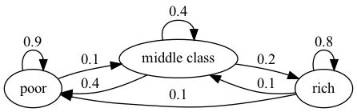
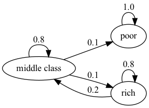
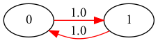

34. Markov Chains: Irreducibility and Ergodicity#
In addition to what’s in Anaconda, this lecture will need the following libraries:
!pip install quantecon
Show output
Requirement already satisfied: quantecon in /home/runner/miniconda3/envs/quantecon/lib/python3.11/site-packages (0.7.2)
Requirement already satisfied: numba>=0.49.0 in /home/runner/miniconda3/envs/quantecon/lib/python3.11/site-packages (from quantecon) (0.59.0)
Requirement already satisfied: numpy>=1.17.0 in /home/runner/miniconda3/envs/quantecon/lib/python3.11/site-packages (from quantecon) (1.26.4)
Requirement already satisfied: requests in /home/runner/miniconda3/envs/quantecon/lib/python3.11/site-packages (from quantecon) (2.31.0)
Requirement already satisfied: scipy>=1.5.0 in /home/runner/miniconda3/envs/quantecon/lib/python3.11/site-packages (from quantecon) (1.11.4)
Requirement already satisfied: sympy in /home/runner/miniconda3/envs/quantecon/lib/python3.11/site-packages (from quantecon) (1.12)
Requirement already satisfied: llvmlite<0.43,>=0.42.0dev0 in /home/runner/miniconda3/envs/quantecon/lib/python3.11/site-packages (from numba>=0.49.0->quantecon) (0.42.0)
Requirement already satisfied: charset-normalizer<4,>=2 in /home/runner/miniconda3/envs/quantecon/lib/python3.11/site-packages (from requests->quantecon) (2.0.4)
Requirement already satisfied: idna<4,>=2.5 in /home/runner/miniconda3/envs/quantecon/lib/python3.11/site-packages (from requests->quantecon) (3.4)
Requirement already satisfied: urllib3<3,>=1.21.1 in /home/runner/miniconda3/envs/quantecon/lib/python3.11/site-packages (from requests->quantecon) (2.0.7)
Requirement already satisfied: certifi>=2017.4.17 in /home/runner/miniconda3/envs/quantecon/lib/python3.11/site-packages (from requests->quantecon) (2024.2.2)
Requirement already satisfied: mpmath>=0.19 in /home/runner/miniconda3/envs/quantecon/lib/python3.11/site-packages (from sympy->quantecon) (1.3.0)
34.1. Overview#
This lecture continues on from our earlier lecture on Markov chains.
Specifically, we will introduce the concepts of irreducibility and ergodicity, and see how they connect to stationarity.
Irreducibility describes the ability of a Markov chain to move between any two states in the system.
Ergodicity is a sample path property that describes the behavior of the system over long periods of time.
As we will see,
an irreducible Markov chain guarantees the existence of a unique stationary distribution, while
an ergodic Markov chain generates time series that satisfy a version of the law of large numbers.
Together, these concepts provide a foundation for understanding the long-term behavior of Markov chains.
Let’s start with some standard imports:
import matplotlib.pyplot as plt
import quantecon as qe
import numpy as np
34.2. Irreducibility#
To explain irreducibility, let’s take \(P\) to be a fixed stochastic matrix.
State \(x\) is called accessible (or reachable) from state \(y\) if \(P^t(x,y)>0\) for some integer \(t\ge 0\).
Two states, \(x\) and \(y\), are said to communicate if \(x\) and \(y\) are accessible from each other.
In view of our discussion above, this means precisely that
state \(x\) can eventually be reached from state \(y\), and
state \(y\) can eventually be reached from state \(x\)
The stochastic matrix \(P\) is called irreducible if all states communicate; that is, if \(x\) and \(y\) communicate for all \((x, y)\) in \(S \times S\).
For example, consider the following transition probabilities for wealth of a fictitious set of households
We can translate this into a stochastic matrix, putting zeros where there’s no edge between nodes
It’s clear from the graph that this stochastic matrix is irreducible: we can eventually reach any state from any other state.
We can also test this using QuantEcon.py’s MarkovChain class
P = [[0.9, 0.1, 0.0],
[0.4, 0.4, 0.2],
[0.1, 0.1, 0.8]]
mc = qe.MarkovChain(P, ('poor', 'middle', 'rich'))
mc.is_irreducible
True
Here’s a more pessimistic scenario in which poor people remain poor forever
This stochastic matrix is not irreducible since, for example, rich is not accessible from poor.
Let’s confirm this
P = [[1.0, 0.0, 0.0],
[0.1, 0.8, 0.1],
[0.0, 0.2, 0.8]]
mc = qe.MarkovChain(P, ('poor', 'middle', 'rich'))
mc.is_irreducible
False
It might be clear to you already that irreducibility is going to be important in terms of long-run outcomes.
For example, poverty is a life sentence in the second graph but not the first.
We’ll come back to this a bit later.
34.2.1. Irreducibility and stationarity#
We discussed uniqueness of stationary distributions in our earlier lecture Markov Chains: Basic Concepts.
There we stated that uniqueness holds when the transition matrix is everywhere positive.
In fact irreducibility is sufficient:
Theorem 34.1
If \(P\) is irreducible, then \(P\) has exactly one stationary distribution.
For proof, see Chapter 4 of [Sargent and Stachurski, 2023] or Theorem 5.2 of [Häggström, 2002].
34.3. Ergodicity#
Under irreducibility, yet another important result obtains:
Theorem 34.2
If \(P\) is irreducible and \(\psi^*\) is the unique stationary distribution, then, for all \(x \in S\),
Here
\(\{X_t\}\) is a Markov chain with stochastic matrix \(P\) and initial distribution \(\psi_0\)
\(\mathbb{1} \{X_t = x\} = 1\) if \(X_t = x\) and zero otherwise.
The result in (34.1) is sometimes called ergodicity.
The theorem tells us that the fraction of time the chain spends at state \(x\) converges to \(\psi^*(x)\) as time goes to infinity.
This gives us another way to interpret the stationary distribution (provided irreducibility holds).
Importantly, the result is valid for any choice of \(\psi_0\).
The theorem is related to the law of large numbers.
It tells us that, in some settings, the law of large numbers sometimes holds even when the sequence of random variables is not IID.
34.3.1. Example: ergodicity and unemployment#
Recall our cross-sectional interpretation of the employment/unemployment model discussed before.
Assume that \(\alpha \in (0,1)\) and \(\beta \in (0,1)\), so that irreducibility holds.
We saw that the stationary distribution is \((p, 1-p)\), where
In the cross-sectional interpretation, this is the fraction of people unemployed.
In view of our latest (ergodicity) result, it is also the fraction of time that a single worker can expect to spend unemployed.
Thus, in the long run, cross-sectional averages for a population and time-series averages for a given person coincide.
This is one aspect of the concept of ergodicity.
34.3.2. Example: Hamilton dynamics#
Another example is the Hamilton dynamics we discussed before.
Let \(\{X_t\}\) be a sample path generated by these dynamics.
Let’s denote the fraction of time spent in state \(x\) over the period \(t=1, \ldots, n\) by \(\hat p_n(x)\), so that
The graph of the Markov chain shows it is irreducible, so ergodicity holds.
Hence we expect that \(\hat p_n(x) \approx \psi^*(x)\) when \(n\) is large.
The next figure shows convergence of \(\hat p_n(x)\) to \(\psi^*(x)\) when \(x=1\) and \(X_0\) is either \(0, 1\) or \(2\).
P = np.array([[0.971, 0.029, 0.000],
[0.145, 0.778, 0.077],
[0.000, 0.508, 0.492]])
ts_length = 10_000
mc = qe.MarkovChain(P)
ψ_star = mc.stationary_distributions[0]
x = 1 # We study convergence to psi^*(x)
fig, ax = plt.subplots()
ax.axhline(ψ_star[x], linestyle='dashed', color='black',
label = fr'$\psi^*({x})$')
# Compute the fraction of time spent in state 0, starting from different x_0s
for x0 in range(len(P)):
X = mc.simulate(ts_length, init=x0)
p_hat = (X == x).cumsum() / np.arange(1, ts_length+1)
ax.plot(p_hat, label=fr'$\hat p_n({x})$ when $X_0 = \, {x0}$')
ax.set_xlabel('t')
ax.set_ylabel(fr'$\hat p_n({x})$')
ax.legend()
plt.show()
{kind=link}
You might like to try changing \(x=1\) to either \(x=0\) or \(x=2\).
In any of these cases, ergodicity will hold.
34.3.3. Example: a periodic chain#
Let’s look at the following example with states 0 and 1:
The transition graph shows that this model is irreducible.
Notice that there is a periodic cycle — the state cycles between the two states in a regular way.
Not surprisingly, this property is called periodicity.
Nonetheless, the model is irreducible, so ergodicity holds.
The following figure illustrates
P = np.array([[0, 1],
[1, 0]])
ts_length = 100
mc = qe.MarkovChain(P)
n = len(P)
fig, axes = plt.subplots(nrows=1, ncols=n)
ψ_star = mc.stationary_distributions[0]
for i in range(n):
axes[i].axhline(ψ_star[i], linestyle='dashed', lw=2, color='black',
label = fr'$\psi^*({i})$')
axes[i].set_xlabel('t')
axes[i].set_ylabel(fr'$\hat p_n({i})$')
# Compute the fraction of time spent, for each x
for x0 in range(n):
# Generate time series starting at different x_0
X = mc.simulate(ts_length, init=x0)
p_hat = (X == i).cumsum() / np.arange(1, ts_length+1)
axes[i].plot(p_hat, label=f'$x_0 = \, {x0} $')
axes[i].legend()
plt.tight_layout()
plt.show()
{kind=link}
This example helps to emphasize that asymptotic stationarity is about the distribution, while ergodicity is about the sample path.
The proportion of time spent in a state can converge to the stationary distribution with periodic chains.
However, the distribution at each state does not.
34.3.4. Example: political institutions#
Let’s go back to the political institutions model with six states discussed in a previous lecture and study ergodicity.
Here’s the transition matrix.
The graph for the chain shows all states are reachable, indicating that this chain is irreducible.
In the next figure, we visualize the difference \(\hat p_n(x) - \psi^* (x)\) for each state \(x\).
Unlike the previous figure, \(X_0\) is held fixed.
P = [[0.86, 0.11, 0.03, 0.00, 0.00, 0.00],
[0.52, 0.33, 0.13, 0.02, 0.00, 0.00],
[0.12, 0.03, 0.70, 0.11, 0.03, 0.01],
[0.13, 0.02, 0.35, 0.36, 0.10, 0.04],
[0.00, 0.00, 0.09, 0.11, 0.55, 0.25],
[0.00, 0.00, 0.09, 0.15, 0.26, 0.50]]
ts_length = 2500
mc = qe.MarkovChain(P)
ψ_star = mc.stationary_distributions[0]
fig, ax = plt.subplots()
X = mc.simulate(ts_length, random_state=1)
# Center the plot at 0
ax.axhline(linestyle='dashed', lw=2, color='black')
for x0 in range(len(P)):
# Calculate the fraction of time for each state
p_hat = (X == x0).cumsum() / np.arange(1, ts_length+1)
ax.plot(p_hat - ψ_star[x0], label=f'$x = {x0+1} $')
ax.set_xlabel('t')
ax.set_ylabel(r'$\hat p_n(x) - \psi^* (x)$')
ax.legend()
plt.show()
{kind=link}
34.4. Exercises#
Exercise 34.1
Benhabib el al. [Benhabib et al., 2019] estimated that the transition matrix for social mobility as the following
where each state 1 to 8 corresponds to a percentile of wealth shares
The matrix is recorded as P below
P = [
[0.222, 0.222, 0.215, 0.187, 0.081, 0.038, 0.029, 0.006],
[0.221, 0.22, 0.215, 0.188, 0.082, 0.039, 0.029, 0.006],
[0.207, 0.209, 0.21, 0.194, 0.09, 0.046, 0.036, 0.008],
[0.198, 0.201, 0.207, 0.198, 0.095, 0.052, 0.04, 0.009],
[0.175, 0.178, 0.197, 0.207, 0.11, 0.067, 0.054, 0.012],
[0.182, 0.184, 0.2, 0.205, 0.106, 0.062, 0.05, 0.011],
[0.123, 0.125, 0.166, 0.216, 0.141, 0.114, 0.094, 0.021],
[0.084, 0.084, 0.142, 0.228, 0.17, 0.143, 0.121, 0.028]
]
P = np.array(P)
codes_B = ('1','2','3','4','5','6','7','8')
Show this process is asymptotically stationary and calculate an approximation to the stationary distribution.
Use simulations to illustrate ergodicity.
Solution to Exercise 34.1
Part 1:
One option is to take the power of the transition matrix.
P = [[0.222, 0.222, 0.215, 0.187, 0.081, 0.038, 0.029, 0.006],
[0.221, 0.22, 0.215, 0.188, 0.082, 0.039, 0.029, 0.006],
[0.207, 0.209, 0.21, 0.194, 0.09, 0.046, 0.036, 0.008],
[0.198, 0.201, 0.207, 0.198, 0.095, 0.052, 0.04, 0.009],
[0.175, 0.178, 0.197, 0.207, 0.11, 0.067, 0.054, 0.012],
[0.182, 0.184, 0.2, 0.205, 0.106, 0.062, 0.05, 0.011],
[0.123, 0.125, 0.166, 0.216, 0.141, 0.114, 0.094, 0.021],
[0.084, 0.084, 0.142, 0.228, 0.17, 0.143, 0.121, 0.028]]
P = np.array(P)
codes_B = ('1','2','3','4','5','6','7','8')
np.linalg.matrix_power(P, 10)
array([[0.20254451, 0.20379879, 0.20742102, 0.19505842, 0.09287832,
0.0503871 , 0.03932382, 0.00858802],
[0.20254451, 0.20379879, 0.20742102, 0.19505842, 0.09287832,
0.0503871 , 0.03932382, 0.00858802],
[0.20254451, 0.20379879, 0.20742102, 0.19505842, 0.09287832,
0.0503871 , 0.03932382, 0.00858802],
[0.20254451, 0.20379879, 0.20742102, 0.19505842, 0.09287832,
0.0503871 , 0.03932382, 0.00858802],
[0.20254451, 0.20379879, 0.20742102, 0.19505842, 0.09287832,
0.0503871 , 0.03932382, 0.00858802],
[0.20254451, 0.20379879, 0.20742102, 0.19505842, 0.09287832,
0.0503871 , 0.03932382, 0.00858802],
[0.20254451, 0.20379879, 0.20742102, 0.19505842, 0.09287832,
0.0503871 , 0.03932382, 0.00858802],
[0.20254451, 0.20379879, 0.20742102, 0.19505842, 0.09287832,
0.0503871 , 0.03932382, 0.00858802]])
For this model, rows of \(P^n\) converge to the stationary distribution as \(n \to \infty\):
mc = qe.MarkovChain(P)
ψ_star = mc.stationary_distributions[0]
ψ_star
array([0.20254451, 0.20379879, 0.20742102, 0.19505842, 0.09287832,
0.0503871 , 0.03932382, 0.00858802])
Part 2:
ts_length = 1000
mc = qe.MarkovChain(P)
fig, ax = plt.subplots()
X = mc.simulate(ts_length, random_state=1)
ax.axhline(linestyle='dashed', lw=2, color='black')
for x0 in range(len(P)):
# Calculate the fraction of time for each worker
p_hat = (X == x0).cumsum() / np.arange(1, ts_length+1)
ax.plot(p_hat - ψ_star[x0], label=f'$x = {x0+1} $')
ax.set_xlabel('t')
ax.set_ylabel(r'$\hat p_n(x) - \psi^* (x)$')
ax.legend()
plt.show()
{kind=link}
Note that the fraction of time spent at each state converges to the probability assigned to that state by the stationary distribution.
Exercise 34.2
According to the discussion above, if a worker’s employment dynamics obey the stochastic matrix
with \(\alpha \in (0,1)\) and \(\beta \in (0,1)\), then, in the long run, the fraction of time spent unemployed will be
In other words, if \(\{X_t\}\) represents the Markov chain for employment, then \(\bar X_m \to p\) as \(m \to \infty\), where
This exercise asks you to illustrate convergence by computing \(\bar X_m\) for large \(m\) and checking that it is close to \(p\).
You will see that this statement is true regardless of the choice of initial condition or the values of \(\alpha, \beta\), provided both lie in \((0, 1)\).
The result should be similar to the plot we plotted here
Solution to Exercise 34.2
We will address this exercise graphically.
The plots show the time series of \(\bar X_m - p\) for two initial conditions.
As \(m\) gets large, both series converge to zero.
α = β = 0.1
ts_length = 3000
p = β / (α + β)
P = ((1 - α, α), # Careful: P and p are distinct
( β, 1 - β))
mc = qe.MarkovChain(P)
fig, ax = plt.subplots()
ax.axhline(linestyle='dashed', lw=2, color='black')
for x0 in range(len(P)):
# Generate time series for worker that starts at x0
X = mc.simulate(ts_length, init=x0)
# Compute fraction of time spent unemployed, for each n
X_bar = (X == 0).cumsum() / np.arange(1, ts_length+1)
# Plot
ax.plot(X_bar - p, label=f'$x_0 = \, {x0} $')
ax.set_xlabel('t')
ax.set_ylabel(r'$\bar X_m - \psi^* (x)$')
ax.legend()
plt.show()
{kind=link}
Exercise 34.3
In quantecon library, irreducibility is tested by checking whether the chain forms a strongly connected component.
Another way to test irreducibility is via the following statement:
The \(n \times n\) matrix \(A\) is irreducible if and only if \(\sum_{k=0}^{n-1}A^k\) is a strictly positive matrix.
(see, e.g., [Zhao, 2012] and this StackExchange post)
Based on this claim, write a function to test irreducibility.
Solution to Exercise 34.3
def is_irreducible(P):
n = len(P)
result = np.zeros((n, n))
for i in range(n):
result += np.linalg.matrix_power(P, i)
return np.all(result > 0)
Let’s try it.
P1 = np.array([[0, 1],
[1, 0]])
P2 = np.array([[1.0, 0.0, 0.0],
[0.1, 0.8, 0.1],
[0.0, 0.2, 0.8]])
P3 = np.array([[0.971, 0.029, 0.000],
[0.145, 0.778, 0.077],
[0.000, 0.508, 0.492]])
for P in (P1, P2, P3):
result = lambda P: 'irreducible' if is_irreducible(P) else 'reducible'
print(f'{P}: {result(P)}')
[[0 1]
[1 0]]: irreducible
[[1. 0. 0. ]
[0.1 0.8 0.1]
[0. 0.2 0.8]]: reducible
[[0.971 0.029 0. ]
[0.145 0.778 0.077]
[0. 0.508 0.492]]: irreducible